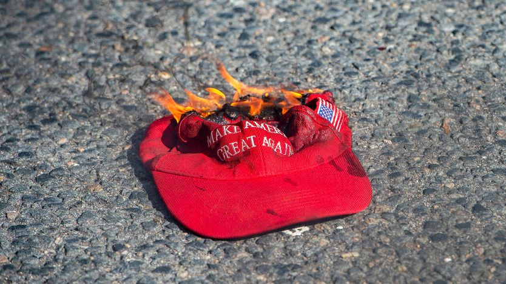

共和党未来的争夺战已经开打
The fight over Republicans’ future has begun
输得很难看之后，党内在争两件事：该怪谁，以及接下来往哪走

- 中期选举丢掉国会两院后，共和党立刻开始互相追责：MAGA纯粹派怪特朗普本人，元老派怪全党转向经济民粹，副总统万斯则罕见地把矛头指向老板的政策。
- 路线之争有三个具体战场：要不要回到自由市场与小政府、要不要继续打伊朗、要不要继续把自己和以色列绑在一起，克鲁兹与德桑蒂斯正在两边下注。
- 特朗普仍是最大变量：他的初选背书能保证候选人拿到三成选票，白宫又换上移民强硬派米勒当幕僚长，说明他在加码而不是退场。
- 判断：共和党的重组会以2028年总统初选为战场，短期内没有人能取代特朗普，党反而会更依赖他个人的筹款能力与号召力，这种局面可能持续到他离开政坛。
11月3日，惨淡的结果陆续传来，华盛顿国会山几步之遥的MAGA据点巴特沃斯酒吧里，年轻的共和党人闷闷地喝着「参院多数马天尼」「红潮」之类的鸡尾酒。他们飞快地走完了悲伤的各个阶段：先是否认，再是愤怒，然后接受。「这是历史性的，」其中一位说，「跟兴登堡号一样历史性。」
党内一场火药味十足的复盘已经展开。多数人承认伊朗战争造成了严重的选举伤害；有一派嗓门很大，还要怪以色列。大家普遍同意选民被腐败激怒了，但很多人不愿把矛头指向特朗普。而民粹主义还在膨胀的同时，仍有人抱着希望，认为党能回到自由市场和小政府的老信条。多年来特朗普对党的主宰掩盖了裂缝，如今裂缝全露出来了。
MAGA内部仍有总统的忠实拥护者。阿肯色州州长桑德斯就在重复特朗普的说法——他不在选票上：「我不认为这能算作对他的裁决。」少数MAGA媒体人，比如莱文和卢默，继续支持伊朗战争和美以关系。
但一批嗓门很大的MAGA纯粹派认为，特朗普让这场运动失望了。11月4日，副总统万斯没有点名怪特朗普，却迈出惊人一步，把矛头指向老板的政策：战争、没能压降生活成本，以及与以色列的关系。
卡尔森、罗根、班农这些MAGA纯粹派主播在选前就已与特朗普决裂，选后更是火力全开。11月5日，班农的「战情室」节目联合主持人温特斯指称，商务部长卢特尼克等白宫官员在搞「见不得人的交易」，「政府里真正的骗子」正在败坏「整个MAGA运动」。她没有把特朗普本人牵进去。
卡尔森在11月4日的节目里把结果称为「灾难」。「你可以在日历上标一笔，」他补了一句，「特朗普主义完了。」他归咎于战争、腐败（特朗普「虚荣又贪财」），以及总统背书了有缺陷的候选人，比如南卡罗来纳州已故鹰派参议员格雷厄姆的妹妹达琳。他认为政府过于专注打击反犹主义，还把那一套叫成「犹太人命也是命」。莱文则痛骂卡尔森是「令人作呕的东西」，说他一直在「破坏总统、共和党和中期选举」。
MAGA内部还在混战，共和党元老派——势力大减但仍不服气——盼着复活。「美国人民已经拒绝了本党转向经济民粹主义，」2017至2021年任副总统的彭斯在《华尔街日报》撰文断言，同时略过了许多民主党候选人也在搞民粹。2011至2023年任参议员的图米在社交平台X上发文暗示，共和党搞国家主义产业政策也走错了路，指的是政府对半导体和稀土矿业公司的持股。
特朗普之前最后一位代表共和党竞选总统的罗姆尼（2012年）在X上给出了更全面也更尖锐的批评：战争、腐败，还有国内越权、财政挥霍和外交纵火（「武器化司法、移民执法暴行、巨额赤字、藏匿爱泼斯坦、抛弃盟友、纵容敌人」）。他说特朗普不只是「政策坏」，更是「品格坏」。许多传统共和党人私下同意，但即便到了现在，敢说出口的极少。
在MAGA纯粹派与元老派之间，还有一类更流动的共和党人，善意地叫务实派，刻薄地叫投机派。比如克鲁兹，周二横扫之后，他眼看着要成为得州最后一个还在任的共和党全州官员。他在自己的播客里做「验尸」，嘴上说要重建为「真正的蓝领政党」，却给出一个特朗普之前的方案：共和党必须做「真正的自由市场保守派」。克鲁兹长期主张强军外交，曾为特朗普的战争叫好，选后不得不改口，说这场战争本该「短暂、果断、早点了结」。
佛州州长德桑蒂斯任期将满，2024年争提名失败，现在希望MAGA运动再看他一眼。和克鲁兹一样，他一直是显眼的鹰派。但选前几天，他对伊朗战争的口风变了。在他自己的选后批评里，他指出共和党没能兑现公布爱泼斯坦相关文件的承诺——这在MAGA内部是情绪极强的话题。他还认为俄亥俄州落败的共和党州长候选人拉马斯瓦米之所以输，是因为「他想引进拿签证的外国劳工」。他并呼吁禁止国会议员炒股——但没有点名特朗普，而特朗普上任以来的股票交易量超过所有议员之和。
更多内斗大概还会爆发。万斯一边向MAGA纯粹派示好，MAGA圈里一边有很多人瞧不上他，尤其因为他与硅谷的关系（他竞选参议员前在那里工作）。MAGA纯粹派激烈反对伊朗冲突，而这场冲突是战争部长赫格塞斯力主的；可赫格塞斯把五角大楼里所谓「觉醒」的将军们清洗掉，又让他在右翼「男性圈」里收获死忠。智库美国企业研究所的特伦德在一场解读选举结果的活动上预测：一旦赫格塞斯被赶下台，「MAGA会疯掉」。
在旁边看这些混战的是特朗普本人，他一向不留情面。仿佛要宣示自己才是最MAGA的那个，11月6日白宫宣布，民族主义、移民强硬派米勒将出任白宫幕僚长。特朗普手里仍有巨额政治资金。共和党策略师海伊指出，他的初选背书仍能保证候选人拿到三成选票，这通常足以定胜负。「只要他还活着，我就不认为我们会进入后特朗普时代。」■